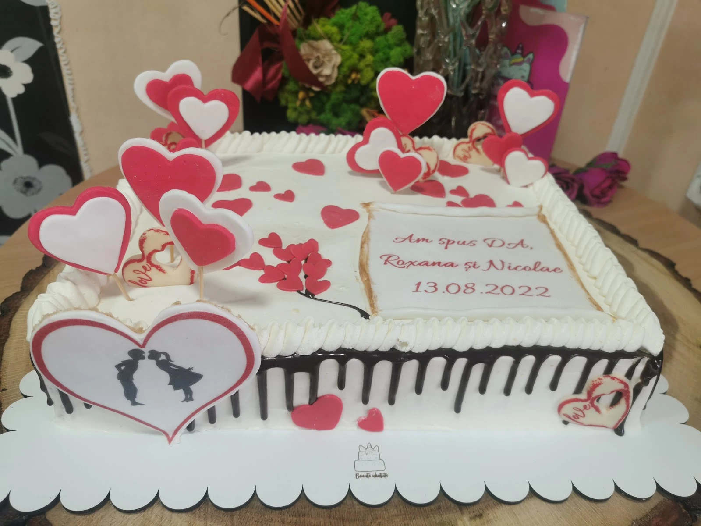

{{Capitolul 1|Chapter 1|Capítulo 1}}
{{Nuntă și cununie|Weddings|Casamentos}}
- {{tort dreptunghiular, alb|rectangular white cake|bolo retangular, branco}}
- {{ciocolată care curge pe margini|chocolate drip on the sides|chocolate a escorrer nas laterais}}
- {{inimioare roșii, siluete pe zahăr|red hearts, silhouettes on sugar|corações vermelhos, silhuetas em açúcar}}
- {{plăcuță cu numele și data|plaque with names and date|placa com nomes e data}}
{{și varianta pe etaje, cu flori din zahăr — vezi prima pagină|and the tiered version with sugar flowers — see the cover page|e a versão de andares com flores de açúcar — veja a primeira página}}